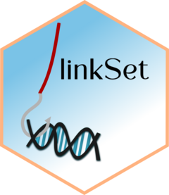

Convert different object types to linkSet
Source:R/AllGenerics.R, R/formatConverter.R
Convert.RdConvert other data formats to linkSet. Currently supported: GInteractions, data.frame.
Usage
Convert(x, ...)
# S4 method for class 'GInteractions'
Convert(x, baitCol = NULL, ...)
# S4 method for class 'data.frame'
Convert(x, source = "data.frame", baitCol = "gene", oeCol = "peak", ...)
# S4 method for class 'Pairs'
Convert(x, baitCol = NULL, ...)
# S4 method for class 'ANY'
Convert(x, ...)
readvalidPairs(file)Value
A linkSet object
A linkSet object
A linkSet object
A linkSet object
Nothing, throws an error
A GInteractions object
Examples
library(InteractionSet)
#> Loading required package: SummarizedExperiment
#> Loading required package: MatrixGenerics
#> Loading required package: matrixStats
#>
#> Attaching package: ‘MatrixGenerics’
#> The following objects are masked from ‘package:matrixStats’:
#>
#> colAlls, colAnyNAs, colAnys, colAvgsPerRowSet, colCollapse,
#> colCounts, colCummaxs, colCummins, colCumprods, colCumsums,
#> colDiffs, colIQRDiffs, colIQRs, colLogSumExps, colMadDiffs,
#> colMads, colMaxs, colMeans2, colMedians, colMins, colOrderStats,
#> colProds, colQuantiles, colRanges, colRanks, colSdDiffs, colSds,
#> colSums2, colTabulates, colVarDiffs, colVars, colWeightedMads,
#> colWeightedMeans, colWeightedMedians, colWeightedSds,
#> colWeightedVars, rowAlls, rowAnyNAs, rowAnys, rowAvgsPerColSet,
#> rowCollapse, rowCounts, rowCummaxs, rowCummins, rowCumprods,
#> rowCumsums, rowDiffs, rowIQRDiffs, rowIQRs, rowLogSumExps,
#> rowMadDiffs, rowMads, rowMaxs, rowMeans2, rowMedians, rowMins,
#> rowOrderStats, rowProds, rowQuantiles, rowRanges, rowRanks,
#> rowSdDiffs, rowSds, rowSums2, rowTabulates, rowVarDiffs, rowVars,
#> rowWeightedMads, rowWeightedMeans, rowWeightedMedians,
#> rowWeightedSds, rowWeightedVars
#> Loading required package: Biobase
#> Welcome to Bioconductor
#>
#> Vignettes contain introductory material; view with
#> 'browseVignettes()'. To cite Bioconductor, see
#> 'citation("Biobase")', and for packages 'citation("pkgname")'.
#>
#> Attaching package: ‘Biobase’
#> The following object is masked from ‘package:MatrixGenerics’:
#>
#> rowMedians
#> The following objects are masked from ‘package:matrixStats’:
#>
#> anyMissing, rowMedians
#>
#> Attaching package: ‘InteractionSet’
#> The following objects are masked from ‘package:linkSet’:
#>
#> anchorIds, anchors, pairdist, reduceRegions, regions, regions<-
gi <- GInteractions(anchor1 = c(1, 2), anchor2 = c(3, 4), regions = GRanges(seqnames = c("chr1", "chr1", "chr2", "chr2"),
ranges = IRanges(start = c(100, 200, 300, 400), width = 50)))
ls <- Convert(gi)
ls
#> linkSet object with 2 interactions and 0 metadata columns:
#> bait seqnames_oe ranges_oe
#> <character> <Rle> <IRanges>
#> [1] chr1:100-149 --- chr2 300-349
#> [2] chr1:200-249 --- chr2 400-449
#> -------
#> regions: 4 ranges and 0 metadata columns
#> seqinfo: 2 sequences from an unspecified genome; no seqlengths
df <- data.frame(
gene = c("gene1", "gene2"),
peak = c("chr1:1000-2000", "chr2:1500-2500"),
score = c(5.5, 6.0)
)
ls <- Convert(df, source = "data.frame", baitCol = "gene", oeCol = "peak")
ls
#> linkSet object with 2 interactions and 1 metadata column:
#> bait seqnames_oe ranges_oe | score
#> <character> <Rle> <IRanges> | <numeric>
#> [1] gene1 --- chr1 999-2000 | 5.5
#> [2] gene2 --- chr2 1499-2500 | 6.0
#> -------
#> regions: 2 ranges and 0 metadata columns
#> seqinfo: 2 sequences from an unspecified genome; no seqlengths